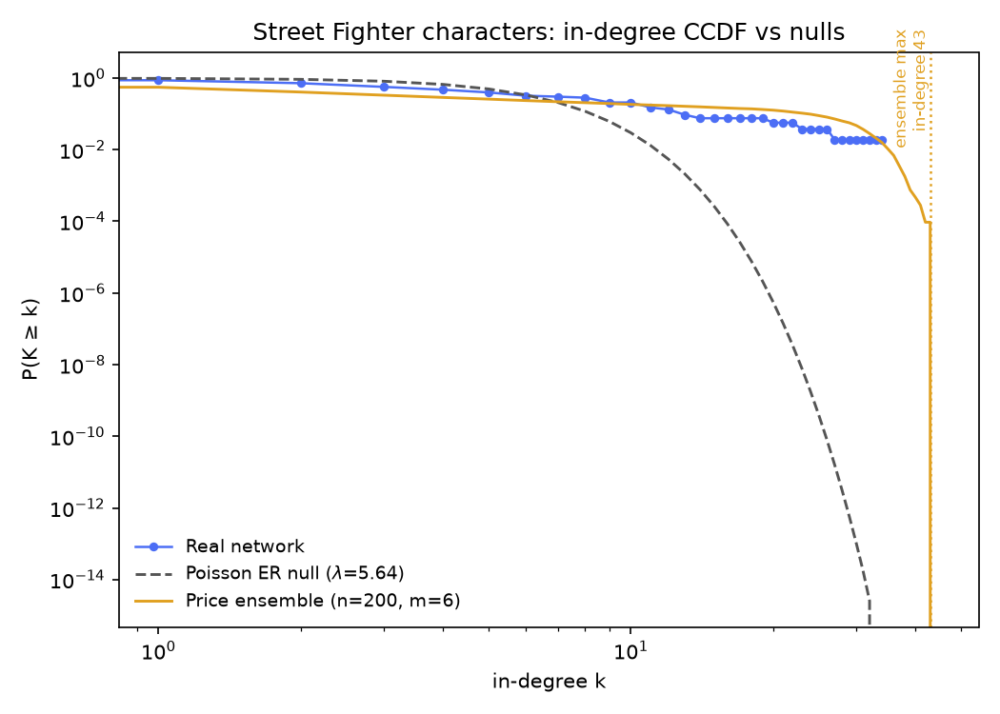
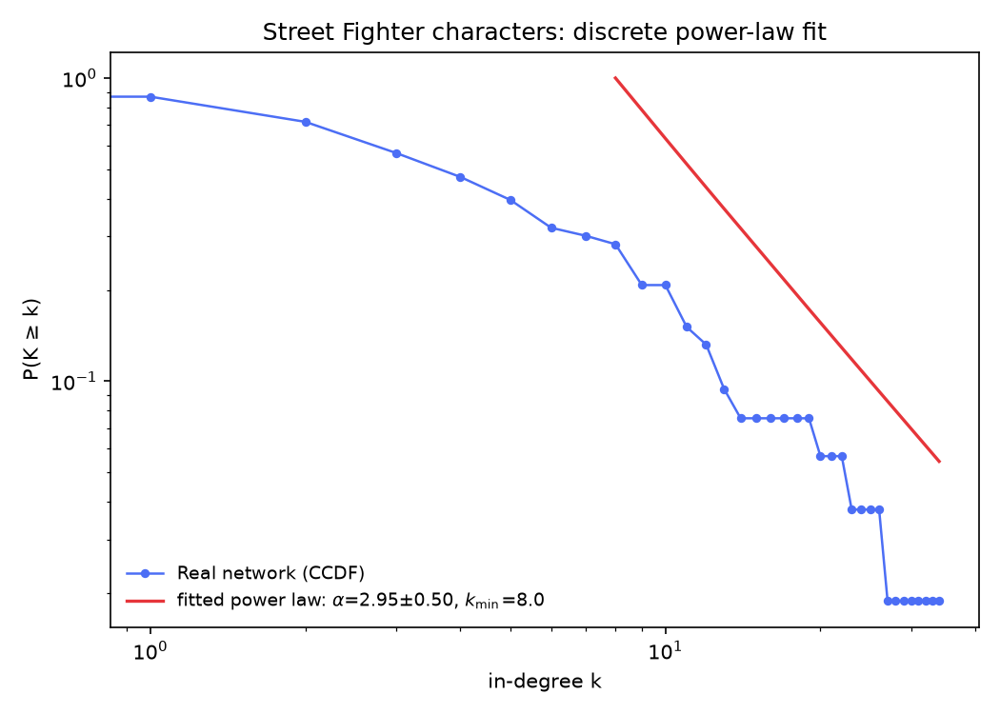

Is Ryu an accident?
Running the Week 2 test suite on 53 Street Fighter character pages — the only dataset so far (besides Marvel) where chance is decisively eliminated, plus one Final Fantasy character on the wrong stage.
Running the Week 2 test suite on 53 Street Fighter character pages — the only dataset so far (besides Marvel) where chance is decisively eliminated, plus one Final Fantasy character on the wrong stage.
Last of the five, same four tests: the 53 pages reachable in Wikipedia's Category: Street Fighter characters (redirects resolved; crawled 2026-09-10), with 299 directed edges between them. Density-wise it's the sparsest of the series (mean in- and out-degree 5.64; ranges 0–34 in, 0–12 out), and like Deep Space Nine it comes with one isolate — this time Tifa Lockhart, in category by mistake from the Final Fantasy side of a crossover, with no links in either direction.
The hub question here is way sharper than the small casts: Ryu is cited on 34 of the other 52 pages — more than twice runner-up M. Bison's 26, and well ahead of Chun-Li's 22. Is Ryu-as-accident a joke about Marvel's Spider-Man? Same order as ever: chance, degree-preserving chance, growth, and the individual level.
Erdős–Rényi with the same 53 nodes and 299 edges. Across 300 offline draws, the biggest hub's in-degree ranged 9–17 (mean 11.4, sd 1.3). Ryu's 34 clears the largest random draw by seventeen links — roughly 18 standard deviations above the random mean — and no draw on 53 nodes ever comes close.
This is the first dataset since Marvel where the ER window closes completely: a hub of Ryu's size cannot be an accident of edge placement. Worf's 12 on Deep Space Nine — a node count in the same league — was rivaled by chance; here the ceiling of 300 draws is 17, and Ryu more than doubles it. Draw your own network below — its biggest hub will top out around half Ryu's size.
Each draw independently places 299 directed edges among 53 nodes at random (no self-loops, no repeats) and plots the resulting in-degree CCDF against the real network's.
Same degree-preserving directed shuffle — chains a→b, b→c, c→d rewired to a→c, c→b, b→d — preserving every character's exact in- and out-degree. Same two statistics on the undirected projection (an edge if either article links to the other; 244 undirected edges):
Offline, 300 shuffle realizations (3,000 swaps each). Clustering: null mean 0.4204 (sd 0.0239) vs. real 0.4081 — z ≈ −0.5, p ≈ 0.68: the degree sequence fully explains the triangle density, the fourth consecutive dataset where that's true (and here the real value is the lowest absolute clustering we have measured — a roster of fighters' articles that mostly just link Ryu and M. Bison rather than making dense squads).
Reciprocity stays the universal winner: null mean 0.1930 (sd 0.0227) vs. real 0.3679 — z ≈ 7.7, beyond all 300 shuffles (p ≈ 0). Only about 37% of Street Fighter citations run both ways — the least chatty of our five datasets for raw rate — but relative to what a degree-preserving wiring explains (19%), it's nearly double, and a bigger sd-relative gap than anything except Marvel's 44 shuffle standard deviations. Whatever mechanism makes a fighter pair mutually reference each other — sequels, matchups, rematches — wiring that two-way rate is real structure the null can't produce.
Run the same test yourself: pick a statistic, run some shuffles, and watch the null build up.
Each shuffle is a fresh copy of the real network, degree-preserving-swapped from scratch — not a running chain — matching how the offline reference numbers above were produced (with fewer swaps per realization here, for responsiveness).
As on every dataset so far: the component partition is invariant under the chain-rewire by construction (a rewiring walk a→b→c→d can never cross between weakly connected components), so all 300 offline realizations return the same 52-node giant plus Tifa, sd 0 — a fact about the method, not a discovery about Street Fighter. Same reasoning as the Marvel post, and so no histogram above.
Directed preferential attachment, Price model, same growth rule as every page: each new node joins with m outgoing links weighted by target's current in-degree. Mean out-degree 5.64 → trials at m = 5, 6, 7 (50 each).
Here preferential attachment sits on a hinge — between Marvel's overshoot and the Silmarillion's undershoot, with Marvel's zero-isolate blind spot attached. Price(m=5) trials reached max in-degree 26–39 (mean 32.3), Price(m=6) 30–40 (mean 34.4), Price(m=7) 29–43 (mean 34.7): the real Ryu hub of 34 is inside the model's spread rather than past it, but the fit is tight rather than clean — at the density-matching m = 6, most trials land right around Ryu's size rather than clearly below it. Unlike the Silmarillion's Morgoth (comfortably inside the spread) and Marvel's Spider-Man (beyond it), Ryu lives right on the edge of the trials — growth-plus-preference describes this network believably, but with very little head room.
On isolates, the Marvel analysis repeats exactly: the model, by construction, cannot produce Tifa — no one in a Price network ever joins with zero links. Real Street Fighter contains a Tifa with none at all.
Move the slider and regenerate to see for yourself.
Grows a fresh directed preferential-attachment network to n=53 nodes with the chosen m, then plots its in-degree CCDF against the real network's.
Preferential attachment depends on history: characters arrive one at a time, and each newcomer is more likely to connect to whoever's already popular, so an early lead can snowball into a hub like Ryu. But what if the roster was born all at once?
If all 53 characters existed simultaneously, there'd be no established popularity for a newcomer to follow — everyone would start with the same shot at new connections. That's the counterfactual below: a second model, the same 53 characters and roughly the same edge budget (m = 6 wires about 318 edges against the real 299), that links nodes uniformly at random instead of preferring the well-connected. It's not a claim about how the Street Fighter article network actually came to exist — it's a way of asking how much of Ryu's hub could come from history alone.
Sequential growth adds one character at a time, wiring each newcomer's m links proportional to how connected existing characters already are (the same rule as above). Big Bang creates all 53 at once and wires the same m links per character uniformly at random — no regard for who's already connected. Switch models or click "New universe" for a fresh run; node size shows degree, and the largest hub is highlighted in gold. Hover a node (mouse only) for its name and degree.
Hover a node to see who occupies it and how connected it is in this run.
Run each model a few times at the same m. Big Bang spreads connections fairly evenly — across 200 offline runs its biggest hub ranged 9–16 (mean 11.9), exactly the ER draw's league and barely half Ryu's 34. Sequential growth at the same m lands higher (30–40, mean 34.4), right on top of the real hub. Of the six datasets, this is the cleanest visual demonstration of what preferential attachment contributes: same nodes, same link budget, and the "born all at once" universe never produces anything like Ryu, while the grown one reliably does.
That's the strongest supporting evidence the growth hypothesis gets on this page — and it still can't produce Tifa. Both models wire every character on arrival or at birth; the isolate with zero edges stays structurally impossible in either.
Exact definitions, same as everywhere: undirected projection (a link either way counts one connection). A character's degree is their number of distinct neighbors; their average neighbor degree is the mean degree of those neighbors. Excluding the isolate Tifa, 52 roster members are connected. Network average ⟨k⟩ = 9.21 against the edge-weighted mean neighbor degree ⟨k²⟩⁄⟨k⟩ = 14.14 — 53% higher. Among our five datasets that's the largest gap outside Marvel's 133% (ASOIAF's is 25%, and the Silmarillion's 15%).
Individually: 44 of 52 (84.6%) have neighbors on average better connected than they are; 8 (15.4%) hold their own; zero ties. A single character never gets out-ranked — Ryu — which makes this the first dataset since Marvel (Spider-Man and Radian) with a champion whose name is also the network's one untoppled symbol.
Search for a character below to see their own numbers.
Each dot is one connected character (own degree vs. average neighbor degree, log-log). The dashed diagonal marks equality: above it, your neighbors out-rank you on average; below it, you out-rank them. Click a dot or search a name.
No character selected yet — click a dot or find one above.
The same closing protocol the Marvel page used, run on the Street Fighter crawl: the in-degree
CCDF P(K ≥ k) against two nulls — an ER random graph, whose
in-degree is exactly Poisson with
λ = 299/53 ≈ 5.64, and a 200-seed
ensemble of directed Price graphs (N = 53, m = 6 —
edge-matched), with the ensemble maximum marked. A discrete power-law fit
(Clauset–Shalizi–Newman MLE, via the powerlaw package) then summarizes the tail:
exponent α̂ with its standard error, and a self-selected cutoff k̂min.


Not random. Under the Poisson null with λ = 5.64, in-degree ≥ 18 is expected 0.0014 times across the whole roster — the real network has 4 such characters, and Ryu's 34 is beyond anything the gray curve can express. The ER verdict from the first section survives the fancier look unchanged: chance is rejected, hard.
Price overshoots at the ceiling, fits at the exponent. The 200-seed ensemble at m = 6 produced max in-degrees of 28–43 (mean 34.1): Ryu's 34 sits dead-center at the mean, though 7 seeds cleared him. And the fitted exponent (α̂ = 2.95) lands almost exactly on Price's theoretical 3.0 — the closest any of our six datasets comes to the textbook value. Growth- plus-preference describes this roster as believably as any story we have.
Neither, strictly. The fit rests on just 15 tail points (k ≥ 8 of 46 cited characters) with a ± 0.50 standard error — half the exponent's own value. The agreement with the theoretical 3.0 is pleasing but weakly identified; a network of 53 pages cannot extend its tail past 52 citations. Treat α̂ as descriptive.
What we can't conclude (for this question):
Pulling the four sections together:
So: for the first time since the Marvel page, a hub's size has no viable chance story — the random draws never reach Ryu's magnitude. But the rest of the analysis softens the parallel: the triangles remain what degree sequence predicts, the mutual citations still aren't, and the growth model fits the hub without overshooting the way it didn't fit his Marvel counterpart. Week 2's homogenous result set leaves one pattern that never breaks: the two-way citation rate is real structural signal everywhere, and the hub question is dataset-specific — sometimes yes (Marvel, ASOIAF, Street Fighter), sometimes maybe (Silmarillion, DS9).
analysis/build_week2_reference.py street-fighter, run against the crawled data in
data/Street_Fighter_characters/; it writes
data/Street_Fighter_characters/street_fighter_week2_summary.json. The fit
section's figures and numbers come from
analysis/build_week2_fit_reference.py street-fighter (networkx + powerlaw +
matplotlib in analysis/.venv), which appends the fit key to the same
JSON. Every interactive figure on this page recomputes its own live version of the same
algorithm in your browser — nothing here is hand-typed separately from the code that produced
it.